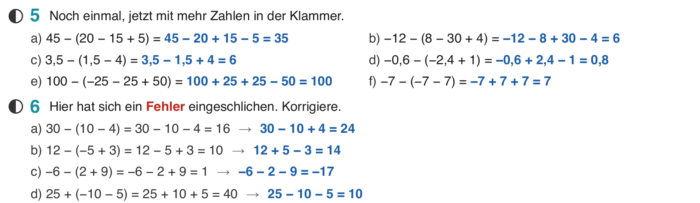
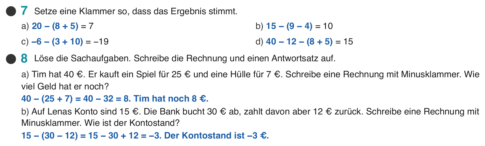

Klasse 7c, Mathematik, Do 01.10.2026, Einzelstunde
| Nichts. Exit-Ticket ins Übungsheft oder auf einen kleinen Zettel. | |
| Digital | Folien-PDF dieser Stunde in Notability. Datei: Mathe 7c – Woche 3 – 4 Minusklammer üben, Exit-Ticket.pdf |


Nur das erste Zeichen umgedreht, das zweite vergessen. Alle Zeichen in der Klammer drehen sich um.
Die Regel von Mittwoch (Klammer auflösen) wird nur wiederholt.